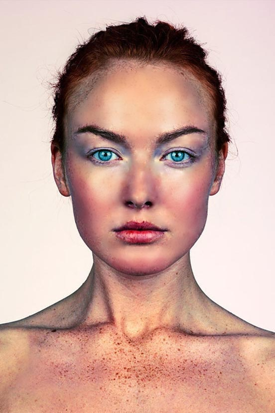

Na prvoj vježbi smo morali napraviti vlastiti font. Ja sam radila u progeamu FontForge. Ovaj proces uključuje crtanje svakog slova, podešavanje njihovih oblika i veličina, te fino ugađanje detalja poput širine linija i zareza.
U drugoj vježbi, koristili smo Adobe Illustrator za crtanje Bezierovih krivulja, što je ključna tehnika u vektorskoj grafici. Krivulje su matematički definirane i omogućavaju preciznu kontrolu nad oblikom i glatkoćom linija i krivina. Osnovni su alat za kreiranje složenih i preciznih oblika u vektorskoj grafici.
Na trećoj vježbi, također smo koristili Adobe Illustrator za kreiranje kompozicija pomoćualata Pen i tehnike multiplikacije objekta. prvo sam pratila primjer sa videa kako bih savladala osnovne korake i tehnike, zatim sam izradila vlastiti projekat koristeći sličan pristup.
U četvrtoj vježbi, fokusirali smo se na izradu složenih objekata u Adobe Illustratoru koristeći napredne tehnike: Compound Path,Difference, različite vrste gradijenata i transparencije. Ove tehnike su nam omogućile da kreiramo kompleksne i vizualno interesantne dizajne. Razvili smo vještine potrebne za naprednu manipulaciju objekta što je ključno za stvaranje profesionalnih grafičkih projekata.
Za prvi projektni zadatak,trebali smo primjeniti sve tehnike i vještine koje smo naučili tijekom proteklih vježbi. U zadatku je se ocjenjivalo:
- preciznost izrade i pozicioniranja elemenata
- uređenost slojeva/layera (imenovanje slojeva, grupiranje i imenovanje grupa, brisanje viškova)
- upotreba SVIH zadanih elemenata
- urednost i smislenost te tehnička izvedba
Nakon projektnog zadatka, presli smo na Adobe Photoshop gdje smo učili retuširanje slika. Retuširanje uključuje niz tehnija i alata koji omogućavaju poboljšanje kvaliteta fotografija i uklanjanje nesavršenosti. Stekla sam ključne vještine u retuširanju, te poboljšala svoje sposobnosti u digitalno oradi fotografije.
U šestoj vježbi smo imali mogućnost savladati tehnike neinvazivnog koloriranja, eksperimentiranja bojama i efektima na slikama, zadržavajući fleksibilnost za kasnije izmjene i prilagođavanje
Sedma vježba bila je fokusirana na fotomontažu. Uključivala je kombiniranje više slika u jednu kompoziciju, stvarajući nove, kreativne i često fantastične prizore. Ova tehnika zahtijeva vještinu u izrezivanju, spajanju, prilagođavanju boja i svijetlosti, kao i rad sa slojevima i maskama.
Nakon 5.,6., i 7. vježbe usljedio je drugi projektni zadatak. Cilj ovog zadatka bio je da stvorimo kompleksnu i estetski privlačnu sliku koristeći napredne tehnike naučene tijekom vježbi, te tako pokažemo sposobnost u prilagođavanju različitih elemenata u jedinstven i skladan dizajn.
U osmoj vježbi bavili smo se kreiranjem cinemagrafa. Cinemagraf je hibrid između fotografije i video zapisa, gdje većina slike ostaje statična, dok se jedan ili više elemenata pokreću. Ovaj efekat stvara vizualno intrigantan doživljaj, privlačeći pažnju na pokretni dio slike

U devetoj vježbi smo se bavili video obradom, ja sam koristila Shotcut, besplatan i otvoren softver za uređivanje videa koji pruža raznovrsne alate. Omogućuje uređivanje video zapisa, dodavanje efekata, te prilagođavanje audio i video zapisa.
Deseta i jedanaesta vježba naučila nas je kreiranju web stranica i postavljanju tih stranica na GitHub. Kroz praktičan rad smo naučili kako pisati HTML, kako ga stilizirati pomoću CSS-a, te kako da svoje projekte postavimo online.
10. i 11. vježbu možete pogledati ovdje!